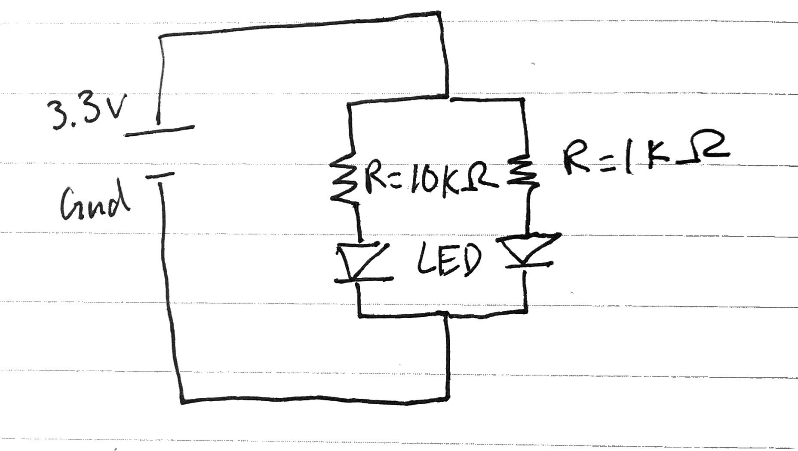
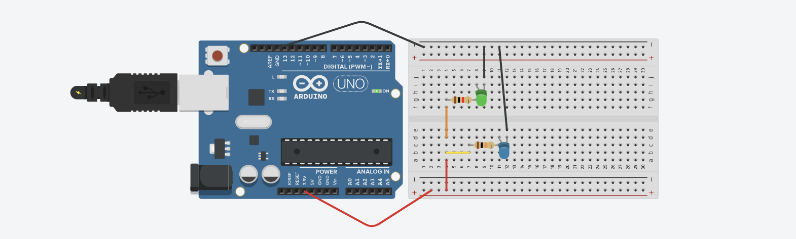

PHYS S-12: Introduction to Digital Fabrication
Nicola Hensch
Week 3: Electronics & Tools
Assignment
- Make a circuit on a breadboard with components from the kit. Find voltage through certain points in the circuit and calculate the current.
- Simulate your circuit on Tinkercad
- Use the ADC to measure the voltage of a potentiometer, or other voltage-divider-based sensor.
Simple circuit
For my breadboard circuit, I decided to try and make a circuit in parallel since I had read and learned about them but never actually created one. As seen in the photos below, rather than placing one resistor after another, which would make a series, I created two paths off of the first red wire. Each path had a different resistor, hence why the green LED is brighter than the blue one. I also created a simple schematic diagram of a circuit in parallel which is what I was trying to replicate. I tested the voltages through both LED's and saw that the blue LED, which is attached to the stronger resistor, had a higher voltage than the green lightbulb. At first I was a little confused by this but after consulting Ohm's Law, I realized that the lower voltage was due to the lower resistance since voltage is proportional to resistance if current is constant. The current through the first path is equal to 0.000245 amps and the current through the other path is 0.00235 amps.


Simulation
I created a simulation of my circuit on Tinkercad, seen below. The resistors I used have the same resistance as my actual circuit, 10k ohms and 1k ohms, and I used orange and yellow wires to more clearly display the two seperate paths I created while trying to make a circuit in parallel.
Using an ADC
In order to use the Microcontroller Analog In or ADC, I first had to build a circuit with a potentiometer. Although the circuit is very simple, it was something that I had never done before. While building the circuit, I learned that the potentiometer's three legs must all be connected to different ports in order to read any data. The left and right must introduce the power and the ground, essentially completing the circuit. The middle leg is used for the anolog in, which alows us to create the data through Arduino. Once the potentiometer and board are connected, I could connect the Metro M0 Express board with my computer. I then started up the basic program found under File > Examples > Basics > Analog Read Serial. I then adapted the code to convert the unitless data points into voltage. I needed the help of Professor Melenbrink, however, since I had never coded with C++. Below are photos of my circuit, the data being displayed, and the adapted code.